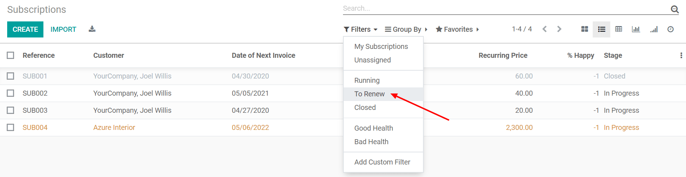

Renovar una suscripción¶
La característica principal de un modelo de negocio de suscripción son los pagos recurrentes. En este modelo, los clientes pagan una cantidad recurrente a cambio de acceder a un producto o servicio.
Cada suscriptor renueva su suscripción cada mes, año u otra duración, dependiendo de su contrato. La mayoría de las empresas de suscripción optan por automatizar sus procesos de renovación aunque, en algunos casos, la opción preferida son las renovaciones manuales.
Gracias a la aplicación Suscripción de Odoo, puede tener todas sus suscripciones en una sola aplicación, sugerir la renovación automática de una suscripción a sus clientes (o una manual), y por último, filtrar todas sus suscripciones para encontrar fácilmente las que necesitan renovación (con ayuda de la etiqueta a renovar).
Renovar su primera suscripción¶
Antes de renovar una suscripción, asegúrese de consultar nuestra documentación sobre cómo crear una cotización con los productos de suscripción. Una vez confirmada, la cotización se convierte en una orden de venta y se crea una nueva suscripción en automático. Por lo tanto, esta suscripción tiene el estado de En progreso y tiene la posibilidad de renovar la suscripción. Puede activar la opción A renovar en la sección correspondiente de la pestaña «Más información». Cuando se activa, en automático aparece una etiqueta amarilla en la esquina superior derecha de la suscripción.

Importante
La etiqueta a renovar aparece automáticamente cuando falla un pago. Este indicador también aparece en el portal del cliente. Para visualizarlo, solo debe hacer clic en el botón Vista previa del cliente. La etiqueta a renovar aparece en la esquina superior derecha.

Cuando se necesita renovar una suscripción, tiene la posibilidad de usar un nuevo botón llamado cotización de la renovación. Si hace clic en este botón, se crea una nueva cotización. Desde ahí, empiece un flujo de ventas sencillo que le permita confirmar o enviar la cotización por correo electrónico a sus clientes. Lo mejor es enviarla por correo electrónico para obtener la confirmación de sus clientes y después confirmarla en la aplicación de Ventas de Odoo.
Nota
En el chatter de esta nueva cotización se menciona que «esta orden de renovación se creó desde la suscripción anterior». Una vez que sus clientes la hayan confirmado, esta cotización se convierte en una orden de venta y se menciona una nueva venta en la esquina superior derecha de la suscripción.
Al hacer clic en el botón Ventas, obtendrá un resumen de sus órdenes de venta en una vista de lista. La única diferencia entre sus dos cotizaciones es la descripción debajo de la categoría Gestión de suscripción. Ahí puede visualizar fácilmente cuál es la renovación.

Visualice sus suscripciones a renovar¶
Por último, si desea visualizar todas sus suscripciones y encontrar fácilmente las que deben renovarse, puede ir a su tablero de suscripciones y utilizar el filtro a renovar.
